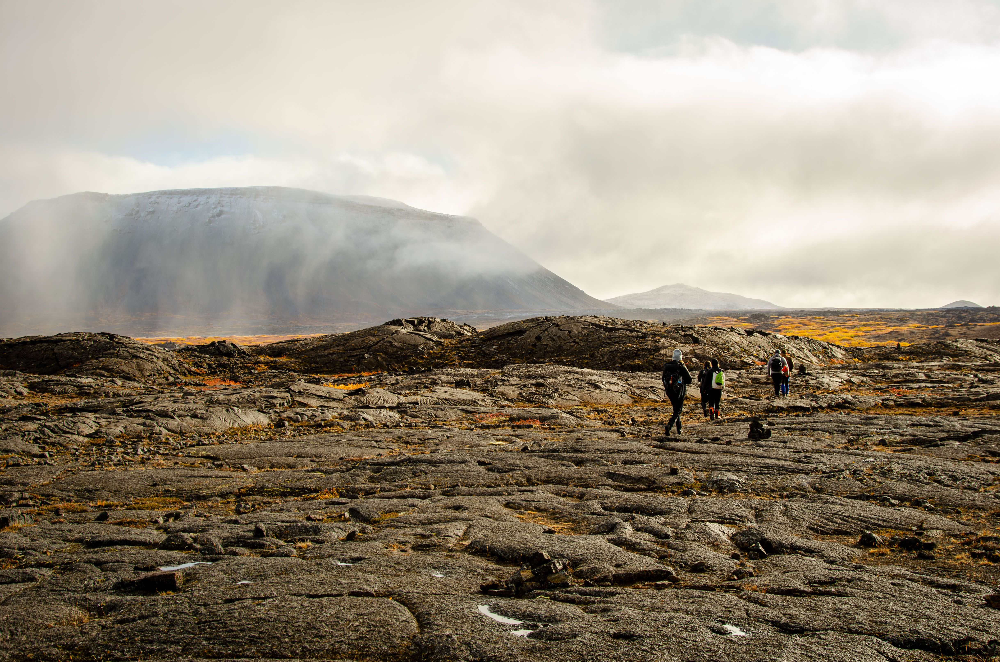
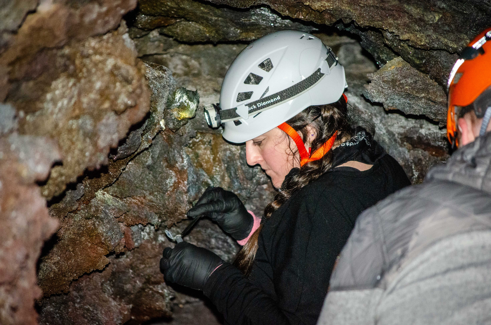
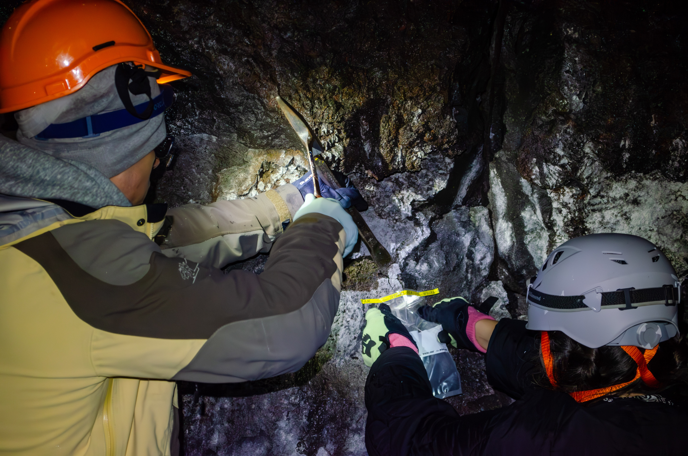
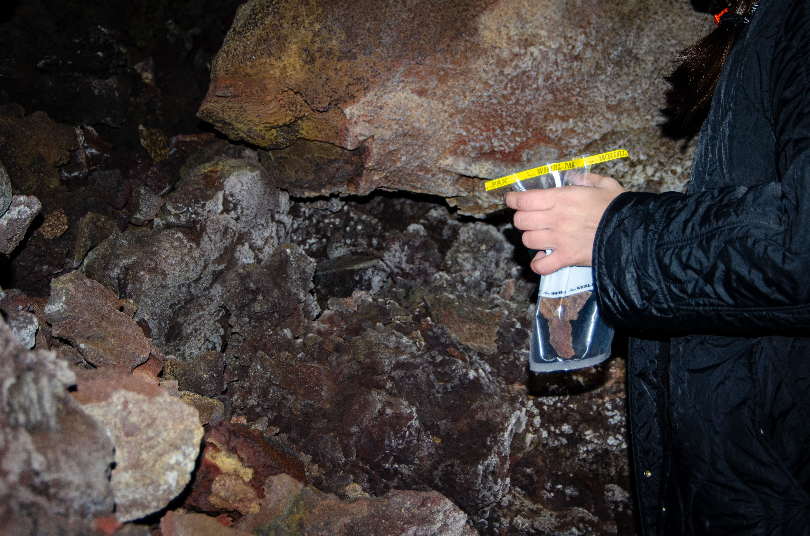
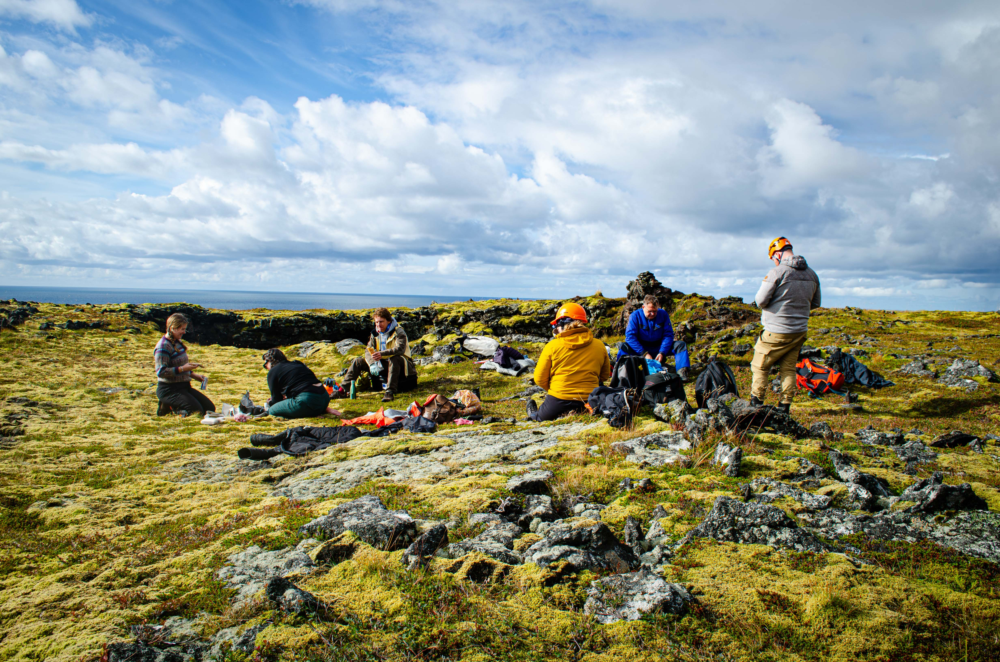
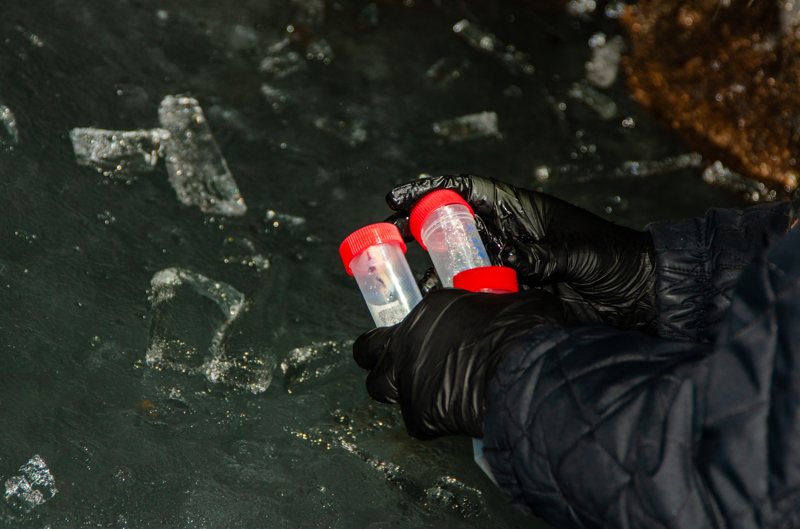
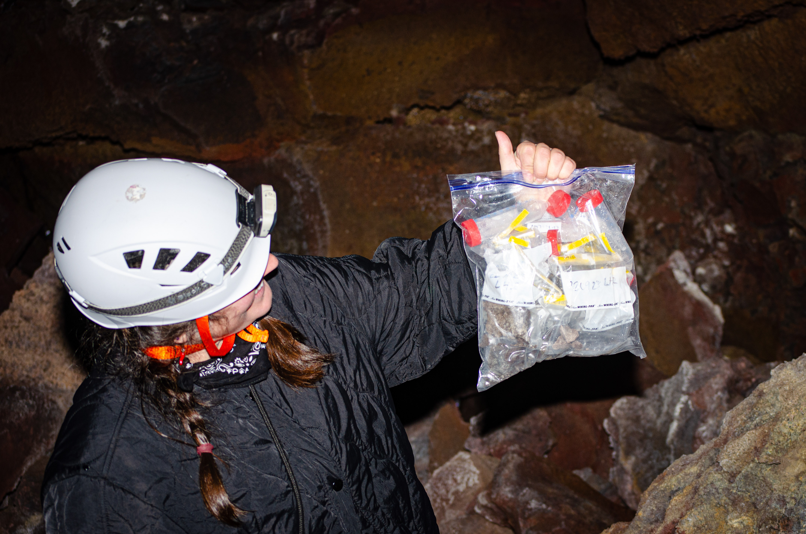

02 — Field Research · Volcanic Landscape · Iceland

Iceland expedition — volcanic traversePELE — Planetary Analogs & Exobiology Lava Tube Expedition — is a scientific research project investigating Icelandic lava caves as analog environments for Mars. Lava tubes on Earth offer stable, sheltered conditions isolated from surface radiation, making them among the most compelling analogues for where life might persist on other planets.
The scientific programme combines DNA sequencing, mass spectrometry, and spectroscopy (XRF, XRD, Raman) to correlate biological and mineralogical data — mapping microbial communities, identifying biosignatures, and developing sampling protocols for these fragile subterranean environments. The work was presented at the 3rd Astrobiology Graduates in Europe (AbGradE) symposium in Berlin, 2018, and involves researchers from Utrecht University, Uppsala University, Stockholm University, CNRS France, Columbia University, DLR, and the University of Akureyri.
Lava tubes provide stable, sheltered environments protected from radiation on the surface. Their microbial mats regulate conditions for life — allowing communities with different metabolisms to coexist.
Agustín Martínez's contribution focuses on the Iceland expedition — the artistic research dimension of fieldwork conducted in lava caves, including ice sampling, geological documentation, and a unique experiment: playing music inside the lava tubes for microbes, exploring how acoustic vibration might affect microbial activity.
 Lofthellir cave entrance — Lofthellir, Iceland
Lofthellir cave entrance — Lofthellir, Iceland
 Cave descent — lava tube access point
Cave descent — lava tube access point

Wall sampling — Lofthellir cave
Joint sampling — lava cave interior
Rock sample collection — Lofthellir01 / LOFTHELLIR
An ancient lava tube beneath the Icelandic highlands — a subterranean architecture formed by flowing basalt, preserving ice formations thousands of years old.
02 / MÝVATN
Lake Mývatn sits atop an active volcanic zone, its waters heated from below. A landscape caught between stillness and constant thermal agitation.
03 / SNAEFELLSNESS
The Purkholahraun lava field beside the Snaefellsjökull glacier — ice and fire in permanent adjacency. Jules Verne's gateway to the centre of the Earth.
04 / ÞINGVELLIR
The valley where the Eurasian and North American plates visibly diverge — walking between continents, inside the seam of the world.
Beyond biological sampling, Agustín's contribution to PELE introduces an artistic research dimension: playing music inside the lava tubes for microbes. The experiment explores whether acoustic vibration might affect microbial activity in cave ecosystems — positioning sound not as documentation but as an active agent in the research process.
The field methodology combined ice and rock sampling (using sterile Whirl-Pak bags and collection vials for lab analysis), geological documentation, audio field recording, and direct physical engagement with the cave environments. Each site — from the ice-floored chambers of Lofthellir to the open lava fields of Purkholahraun — was approached both as scientific site and as perceptual landscape.
This dual register — rigorous scientific protocol alongside artistic practice — is central to the project's inquiry: what happens when you bring music into a space that hasn't heard it in geological time?

Purkholahraun lava field — Snaefellsness, Iceland
Ice sample collection — Lofthellir
Collected samples — lava tube